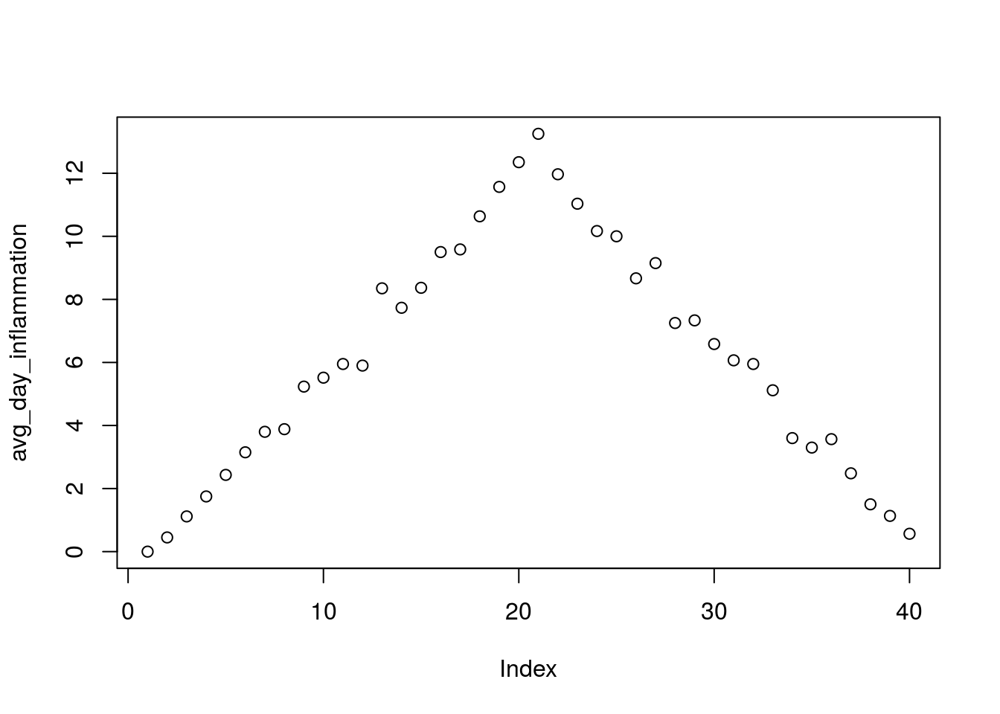

Conditionals
In order to update our function to decide between saving or not, we need to write code that automatically decides between multiple options. The computer can make these deicisons through logical comparisons.
## [1] FALSE
As 37 is not greater than 100, this returns a FALSE object. And as you likely guessed, the opposite of FALSE is TRUE.
## [1] TRUE
We pair these logical comparison tools with what R calls a conditional statement, and it looks like this:
num <- 37
if (num > 100) {
print("greater")
} else {
print("not greater")
}
print("done")
## [1] "not greater"
## [1] "done"
The second line of this code uses an if statement to tell R that we want to make a choice. If the following test is TRUE, the body of the if (i.e., the lines in the curly braces underneath it) are executed. If the test is FALSE, the body of the else is executed instead. Only one or the other is ever executed:
In the example above, the test num > 100 returns the value FALSE, which is why the code inside the if block was skipped and the code inside the else statement was run instead.
## [1] FALSE
And as you likely guessed, the opposite of FALSE is TRUE.
## [1] TRUE
Conditional statements don't have to include an else. If there isn't one, R simply does nothing if the test is false:
num <- 53
if (num > 100) {
print("num is greater than 100")
}
We can also chain several tests together when there are more than two options. This makes it simple to write a function that returns the sign of a number:
sign <- function(num) {
if (num > 0) {
return(1)
} else if (num == 0) {
return(0)
} else {
return(-1)
}
}
sign(-3)
## [1] -1
## [1] 0
## [1] 1
Note that when combining else and if in an else if statement, the if portion still requires a direct input condition. This is never the case for the else statement alone, which is only executed if all other conditions go unsatisfied. Note that the test for equality uses two equal signs, ==.
Other Comparisons
Other tests include:
greater than or equal to (>=),
less than or equal to(<=), and
not equal to (!=).
We can also combine tests:
two ampersands, &&, symbolize "and",
two vertical bars, ||, symbolize "or",
&& is only true if both parts are true:
if (1 > 0 && -1 > 0) {
print("both parts are true")
} else {
print("at least one part is not true")
}
## [1] "at least one part is not true"
while || is true if either part is true:
if (1 > 0 || -1 > 0) {
print("at least one part is true")
} else {
print("neither part is true")
}
## [1] "at least one part is true"
In this case, "either" means "either or both", not "either one or the other but not both".
Saving Automatically Generated Figures
analyze <- function(filename) {
# Plots the average, min, and max inflammation over time.
# Input is character string of a csv file.
dat <- read.csv(file = filename, header = FALSE)
avg_day_inflammation <- apply(dat, 2, mean)
plot(avg_day_inflammation)
max_day_inflammation <- apply(dat, 2, max)
plot(max_day_inflammation)
min_day_inflammation <- apply(dat, 2, min)
plot(min_day_inflammation)
}
pdf("inflammation-01.pdf")
analyze("data/inflammation-01.csv")
dev.off()
Now that we know how to have R make decisions based on input values, let's update analyze:
analyze <- function(filename, output = NULL) {
# Plots the average, min, and max inflammation over time.
# Input:
# filename: character string of a csv file
# output: character string of pdf file for saving
if (!is.null(output)) {
pdf(output)
}
dat <- read.csv(file = filename, header = FALSE)
avg_day_inflammation <- apply(dat, 2, mean)
plot(avg_day_inflammation)
max_day_inflammation <- apply(dat, 2, max)
plot(max_day_inflammation)
min_day_inflammation <- apply(dat, 2, min)
plot(min_day_inflammation)
if (!is.null(output)) {
dev.off()
}
}
We added an argument, output, that by default is set to NULL. An if statement at the beginning checks the argument output to decide whether or not to save the plots to a pdf. Let's break it down. The function is.null returns TRUE if a variable is NULL and FALSE otherwise. The exclamation mark, !, stands for "not". Therefore the line in the if block is only executed if output is "not null".
output <- NULL
is.null(output)
## [1] TRUE
## [1] FALSE
Now we can use analyze interactively, as before,
analyze("data/inflammation-01.csv")


but also use it to save plots,
analyze("data/inflammation-01.csv", output = "inflammation-01.pdf")
Before going further, we will create a directory results for saving our plots. It is good practice in data analysis projects to save all output to a directory separate from the data and analysis code.
# create a new folder using R
dir.create("results")
Now run analyze and save the plot in the results directory,
analyze("data/inflammation-01.csv", output = "results/inflammation-01.pdf")
This now works well when we want to process one data file at a time, but how can we specify the output file in analyze_all? We need to do two things:
- Substitute the filename ending "csv" with "pdf".
- Save the plot to the
results directory.
To change the extension to "pdf", we will use the function sub,
f <- "inflammation-01.csv"
sub("csv", "pdf", f)
## [1] "inflammation-01.pdf"
To add the "results" directory to the filename use the function file.path,
file.path("results", sub("csv", "pdf", f))
## [1] "results/inflammation-01.pdf"
Now let's update analyze_all:
analyze_all <- function(pattern) {
# Directory name containing the data
data_dir <- "data"
# Directory name for results
results_dir <- "results"
# Runs the function analyze for each file in the current working directory
# that contains the given pattern.
filenames <- list.files(path = data_dir, pattern = pattern)
for (f in filenames) {
pdf_name <- file.path(results_dir, sub("csv", "pdf", f))
analyze(file.path(data_dir, f), output = pdf_name)
}
}
Now we can save all of the results with just one line of code:
analyze_all("inflammation.*csv")
Now if we need to make any changes to our analysis, we can edit the analyze function and quickly regenerate all the figures with analyze_all.
Exercise: Changing the Behavior of the Plot Command
One of your collaborators asks if you can recreate the figures with lines instead of points. Find the relevant argument to plot by reading the documentation (?plot), update analyze, and then recreate all the figures with analyze_all.
LS0tCnRpdGxlOiAiTGVjdHVyZSAzOiBNYWtpbmcgY2hvaWNlcyIKcXVlc3Rpb25zOgotICJIb3cgZG8gSSBtYWtlIGNob2ljZXMgdXNpbmcgYGlmYCBhbmQgYGVsc2VgIHN0YXRlbWVudHM/IgotICJIb3cgZG8gSSBjb21wYXJlIHZhbHVlcz8iCi0gIkhvdyBkbyBJIHNhdmUgbXkgcGxvdHMgdG8gYSBQREYgZmlsZT8iCm9iamVjdGl2ZXM6Ci0gIlNhdmUgcGxvdChzKSBpbiBhIFBERiBmaWxlLiIKLSAiV3JpdGUgY29uZGl0aW9uYWwgc3RhdGVtZW50cyB3aXRoIGBpZmAgYW5kIGBlbHNlYC4iCi0gIkNvcnJlY3RseSBldmFsdWF0ZSBleHByZXNzaW9ucyBjb250YWluaW5nIGAmJmAgKCdhbmQnKSBhbmQgYHx8YCAoJ29yJykuIgprZXlwb2ludHM6Ci0gIlNhdmUgYSBwbG90IGluIGEgcGRmIGZpbGUgdXNpbmcgYHBkZihcIm5hbWUucGRmXCIpYCBhbmQgc3RvcCB3cml0aW5nIHRvIHRoZSBwZGYgZmlsZSB3aXRoIGBkZXYub2ZmKClgLiIKLSAiVXNlIGBpZiAoY29uZGl0aW9uKWAgdG8gc3RhcnQgYSBjb25kaXRpb25hbCBzdGF0ZW1lbnQsIGBlbHNlIGlmIChjb25kaXRpb24pYCB0byBwcm92aWRlIGFkZGl0aW9uYWwgdGVzdHMsIGFuZCBgZWxzZWAgdG8gcHJvdmlkZSBhIGRlZmF1bHQuIgotICJUaGUgYm9kaWVzIG9mIGNvbmRpdGlvbmFsIHN0YXRlbWVudHMgbXVzdCBiZSBzdXJyb3VuZGVkIGJ5IGN1cmx5IGJyYWNlcyBgeyB9YC4iCi0gIlVzZSBgPT1gIHRvIHRlc3QgZm9yIGVxdWFsaXR5LiIKLSAiYFggJiYgWWAgaXMgb25seSB0cnVlIGlmIGJvdGggWCBhbmQgWSBhcmUgdHJ1ZS4iCi0gImBYIHx8IFlgIGlzIHRydWUgaWYgZWl0aGVyIFggb3IgWSwgb3IgYm90aCwgYXJlIHRydWUuIgpzb3VyY2U6IFJtZAotLS0KCjwhLS0gYGBge3IsIGluY2x1ZGUgPSBGQUxTRX0Kc291cmNlKCIuLi9iaW4vY2h1bmstb3B0aW9ucy5SIikKa25pdHJfZmlnX3BhdGgoIjA0LWNvbmQtIikKYGBgIC0tPgoKCmBgYHtyIHNldHVwLCBpbmNsdWRlPUZBTFNFfQpsaWJyYXJ5KGtuaXRyKQprbml0cjo6b3B0c19jaHVuayRzZXQoZWNobyA9IFRSVUUpCmBgYAoKIyMjIENvbmRpdGlvbmFscwoKSW4gb3JkZXIgdG8gdXBkYXRlIG91ciBmdW5jdGlvbiB0byBkZWNpZGUgYmV0d2VlbiBzYXZpbmcgb3Igbm90LCB3ZSBuZWVkIHRvIHdyaXRlIGNvZGUgdGhhdCBhdXRvbWF0aWNhbGx5IGRlY2lkZXMgYmV0d2VlbiBtdWx0aXBsZSBvcHRpb25zLiBUaGUgY29tcHV0ZXIgY2FuIG1ha2UgdGhlc2UgZGVpY2lzb25zIHRocm91Z2ggbG9naWNhbCBjb21wYXJpc29ucy4KCmBgYHtyfQpudW0gPC0gMzcKbnVtID4gMTAwCmBgYAoKQXMgMzcgaXMgbm90IGdyZWF0ZXIgdGhhbiAxMDAsIHRoaXMgcmV0dXJucyBhIGBGQUxTRWAgb2JqZWN0LiBBbmQgYXMgeW91IGxpa2VseSBndWVzc2VkLCB0aGUgb3Bwb3NpdGUgb2YgYEZBTFNFYCBpcyBgVFJVRWAuCgpgYGB7cn0KbnVtIDwgMTAwCmBgYAoKV2UgcGFpciB0aGVzZSBsb2dpY2FsIGNvbXBhcmlzb24gdG9vbHMgd2l0aCB3aGF0IFIgY2FsbHMgYSAqKmNvbmRpdGlvbmFsIHN0YXRlbWVudCoqLCBhbmQgaXQgbG9va3MgbGlrZSB0aGlzOgoKYGBge3IsIHJlc3VsdHM9J2hvbGQnfQpudW0gPC0gMzcKaWYgKG51bSA+IDEwMCkgewogIHByaW50KCJncmVhdGVyIikKfSBlbHNlIHsKICBwcmludCgibm90IGdyZWF0ZXIiKQp9CnByaW50KCJkb25lIikKYGBgCgpUaGUgc2Vjb25kIGxpbmUgb2YgdGhpcyBjb2RlIHVzZXMgYW4gYGlmYCBzdGF0ZW1lbnQgdG8gdGVsbCBSIHRoYXQgd2Ugd2FudCB0byBtYWtlIGEgY2hvaWNlLgpJZiB0aGUgZm9sbG93aW5nIHRlc3QgaXMgYFRSVUVgLCB0aGUgYm9keSBvZiB0aGUgYGlmYCAoaS5lLiwgdGhlIGxpbmVzIGluIHRoZSBjdXJseSBicmFjZXMgdW5kZXJuZWF0aCBpdCkgYXJlIGV4ZWN1dGVkLgpJZiB0aGUgdGVzdCBpcyBgRkFMU0VgLCB0aGUgYm9keSBvZiB0aGUgYGVsc2VgIGlzIGV4ZWN1dGVkIGluc3RlYWQuCk9ubHkgb25lIG9yIHRoZSBvdGhlciBpcyBldmVyIGV4ZWN1dGVkOgoKPCEtLSA8aW1nIHNyYz0iLi4vZmlndXJlcy9weXRob24tZmxvd2NoYXJ0LWNvbmRpdGlvbmFsLnN2ZyIgYWx0PSJFeGVjdXRpbmcgYSBDb25kaXRpb25hbCIgLz4gLS0+CiFbQ29uZGl0aW9uYWwgcHJvZ3JhbW1pbmddKGZpZ3VyZXMvcHl0aG9uLWZsb3djaGFydC1jb25kaXRpb25hbC5zdmcpCgpJbiB0aGUgZXhhbXBsZSBhYm92ZSwgdGhlIHRlc3QgYG51bSA+IDEwMGAgcmV0dXJucyB0aGUgdmFsdWUgYEZBTFNFYCwgd2hpY2ggaXMgd2h5IHRoZSBjb2RlIGluc2lkZSB0aGUgYGlmYCBibG9jayB3YXMgc2tpcHBlZCBhbmQgdGhlIGNvZGUgaW5zaWRlIHRoZSBgZWxzZWAgc3RhdGVtZW50IHdhcyBydW4gaW5zdGVhZC4KCmBgYHtyfQpudW0gPiAxMDAKYGBgCgpBbmQgYXMgeW91IGxpa2VseSBndWVzc2VkLCB0aGUgb3Bwb3NpdGUgb2YgYEZBTFNFYCBpcyBgVFJVRWAuCgpgYGB7cn0KbnVtIDwgMTAwCmBgYAoKQ29uZGl0aW9uYWwgc3RhdGVtZW50cyBkb24ndCBoYXZlIHRvIGluY2x1ZGUgYW4gYGVsc2VgLgpJZiB0aGVyZSBpc24ndCBvbmUsIFIgc2ltcGx5IGRvZXMgbm90aGluZyBpZiB0aGUgdGVzdCBpcyBmYWxzZToKCmBgYHtyfQpudW0gPC0gNTMKaWYgKG51bSA+IDEwMCkgewogIHByaW50KCJudW0gaXMgZ3JlYXRlciB0aGFuIDEwMCIpCn0KYGBgCgpXZSBjYW4gYWxzbyBjaGFpbiBzZXZlcmFsIHRlc3RzIHRvZ2V0aGVyIHdoZW4gdGhlcmUgYXJlIG1vcmUgdGhhbiB0d28gb3B0aW9ucy4KVGhpcyBtYWtlcyBpdCBzaW1wbGUgdG8gd3JpdGUgYSBmdW5jdGlvbiB0aGF0IHJldHVybnMgdGhlIHNpZ24gb2YgYSBudW1iZXI6CgpgYGB7cn0Kc2lnbiA8LSBmdW5jdGlvbihudW0pIHsKICBpZiAobnVtID4gMCkgewogICAgcmV0dXJuKDEpCiAgfSBlbHNlIGlmIChudW0gPT0gMCkgewogICAgcmV0dXJuKDApCiAgfSBlbHNlIHsKICAgIHJldHVybigtMSkKICB9Cn0KCnNpZ24oLTMpCnNpZ24oMCkKc2lnbigyLzMpCmBgYAoKTm90ZSB0aGF0IHdoZW4gY29tYmluaW5nIGBlbHNlYCBhbmQgYGlmYCBpbiBhbiBgZWxzZSBpZmAgc3RhdGVtZW50LCB0aGUgYGlmYCBwb3J0aW9uIHN0aWxsIHJlcXVpcmVzIGEgZGlyZWN0IGlucHV0IGNvbmRpdGlvbi4gIFRoaXMgaXMgbmV2ZXIgdGhlIGNhc2UgZm9yIHRoZSBgZWxzZWAgc3RhdGVtZW50IGFsb25lLCB3aGljaCBpcyBvbmx5IGV4ZWN1dGVkIGlmIGFsbCBvdGhlciBjb25kaXRpb25zIGdvIHVuc2F0aXNmaWVkLgpOb3RlIHRoYXQgdGhlIHRlc3QgZm9yIGVxdWFsaXR5IHVzZXMgdHdvIGVxdWFsIHNpZ25zLCBgPT1gLgoKIyMgT3RoZXIgQ29tcGFyaXNvbnMKT3RoZXIgdGVzdHMgaW5jbHVkZToKCiogZ3JlYXRlciB0aGFuIG9yIGVxdWFsIHRvIChgPj1gKSwKCiogbGVzcyB0aGFuIG9yIGVxdWFsIHRvKGA8PWApLCBhbmQKCiogbm90IGVxdWFsIHRvIChgIT1gKS4KCldlIGNhbiBhbHNvIGNvbWJpbmUgdGVzdHM6CgoqIHR3byBhbXBlcnNhbmRzLCBgJiZgLCBzeW1ib2xpemUgImFuZCIsCgoqIHR3byB2ZXJ0aWNhbCBiYXJzLCBgfHxgLCBzeW1ib2xpemUgIm9yIiwKCmAmJmAgaXMgb25seSB0cnVlIGlmIGJvdGggcGFydHMgYXJlIHRydWU6CgpgYGB7cn0KaWYgKDEgPiAwICYmIC0xID4gMCkgewogICAgcHJpbnQoImJvdGggcGFydHMgYXJlIHRydWUiKQp9IGVsc2UgewogIHByaW50KCJhdCBsZWFzdCBvbmUgcGFydCBpcyBub3QgdHJ1ZSIpCn0KYGBgCgp3aGlsZSBgfHxgIGlzIHRydWUgaWYgZWl0aGVyIHBhcnQgaXMgdHJ1ZToKCmBgYHtyfQppZiAoMSA+IDAgfHwgLTEgPiAwKSB7CiAgICBwcmludCgiYXQgbGVhc3Qgb25lIHBhcnQgaXMgdHJ1ZSIpCn0gZWxzZSB7CiAgcHJpbnQoIm5laXRoZXIgcGFydCBpcyB0cnVlIikKfQpgYGAKCkluIHRoaXMgY2FzZSwgImVpdGhlciIgbWVhbnMgImVpdGhlciBvciBib3RoIiwgbm90ICJlaXRoZXIgb25lIG9yIHRoZSBvdGhlciBidXQgbm90IGJvdGgiLgoKIyMjIFNhdmluZyBBdXRvbWF0aWNhbGx5IEdlbmVyYXRlZCBGaWd1cmVzCgpgYGB7ciwgcmVzdWx0cz0naGlkZSd9CmFuYWx5emUgPC0gZnVuY3Rpb24oZmlsZW5hbWUpIHsKICAjIFBsb3RzIHRoZSBhdmVyYWdlLCBtaW4sIGFuZCBtYXggaW5mbGFtbWF0aW9uIG92ZXIgdGltZS4KICAjIElucHV0IGlzIGNoYXJhY3RlciBzdHJpbmcgb2YgYSBjc3YgZmlsZS4KICBkYXQgPC0gcmVhZC5jc3YoZmlsZSA9IGZpbGVuYW1lLCBoZWFkZXIgPSBGQUxTRSkKICBhdmdfZGF5X2luZmxhbW1hdGlvbiA8LSBhcHBseShkYXQsIDIsIG1lYW4pCiAgcGxvdChhdmdfZGF5X2luZmxhbW1hdGlvbikKICBtYXhfZGF5X2luZmxhbW1hdGlvbiA8LSBhcHBseShkYXQsIDIsIG1heCkKICBwbG90KG1heF9kYXlfaW5mbGFtbWF0aW9uKQogIG1pbl9kYXlfaW5mbGFtbWF0aW9uIDwtIGFwcGx5KGRhdCwgMiwgbWluKQogIHBsb3QobWluX2RheV9pbmZsYW1tYXRpb24pCn0KCnBkZigiaW5mbGFtbWF0aW9uLTAxLnBkZiIpCmFuYWx5emUoImRhdGEvaW5mbGFtbWF0aW9uLTAxLmNzdiIpCmRldi5vZmYoKQpgYGAKCk5vdyB0aGF0IHdlIGtub3cgaG93IHRvIGhhdmUgUiBtYWtlIGRlY2lzaW9ucyBiYXNlZCBvbiBpbnB1dCB2YWx1ZXMsCmxldCdzIHVwZGF0ZSBgYW5hbHl6ZWA6CgpgYGB7ciBhbmFseXplLXNhdmV9CmFuYWx5emUgPC0gZnVuY3Rpb24oZmlsZW5hbWUsIG91dHB1dCA9IE5VTEwpIHsKICAjIFBsb3RzIHRoZSBhdmVyYWdlLCBtaW4sIGFuZCBtYXggaW5mbGFtbWF0aW9uIG92ZXIgdGltZS4KICAjIElucHV0OgogICMgICAgZmlsZW5hbWU6IGNoYXJhY3RlciBzdHJpbmcgb2YgYSBjc3YgZmlsZQogICMgICAgb3V0cHV0OiBjaGFyYWN0ZXIgc3RyaW5nIG9mIHBkZiBmaWxlIGZvciBzYXZpbmcKICBpZiAoIWlzLm51bGwob3V0cHV0KSkgewogICAgcGRmKG91dHB1dCkKICB9CiAgZGF0IDwtIHJlYWQuY3N2KGZpbGUgPSBmaWxlbmFtZSwgaGVhZGVyID0gRkFMU0UpCiAgYXZnX2RheV9pbmZsYW1tYXRpb24gPC0gYXBwbHkoZGF0LCAyLCBtZWFuKQogIHBsb3QoYXZnX2RheV9pbmZsYW1tYXRpb24pCiAgbWF4X2RheV9pbmZsYW1tYXRpb24gPC0gYXBwbHkoZGF0LCAyLCBtYXgpCiAgcGxvdChtYXhfZGF5X2luZmxhbW1hdGlvbikKICBtaW5fZGF5X2luZmxhbW1hdGlvbiA8LSBhcHBseShkYXQsIDIsIG1pbikKICBwbG90KG1pbl9kYXlfaW5mbGFtbWF0aW9uKQogIGlmICghaXMubnVsbChvdXRwdXQpKSB7CiAgICBkZXYub2ZmKCkKICB9Cn0KYGBgCgpXZSBhZGRlZCBhbiBhcmd1bWVudCwgYG91dHB1dGAsIHRoYXQgYnkgZGVmYXVsdCBpcyBzZXQgdG8gYE5VTExgLgpBbiBgaWZgIHN0YXRlbWVudCBhdCB0aGUgYmVnaW5uaW5nIGNoZWNrcyB0aGUgYXJndW1lbnQgYG91dHB1dGAgdG8gZGVjaWRlIHdoZXRoZXIgb3Igbm90IHRvIHNhdmUgdGhlIHBsb3RzIHRvIGEgcGRmLgpMZXQncyBicmVhayBpdCBkb3duLgpUaGUgZnVuY3Rpb24gYGlzLm51bGxgIHJldHVybnMgYFRSVUVgIGlmIGEgdmFyaWFibGUgaXMgYE5VTExgIGFuZCBgRkFMU0VgIG90aGVyd2lzZS4KVGhlIGV4Y2xhbWF0aW9uIG1hcmssIGAhYCwgc3RhbmRzIGZvciAibm90Ii4KVGhlcmVmb3JlIHRoZSBsaW5lIGluIHRoZSBgaWZgIGJsb2NrIGlzIG9ubHkgZXhlY3V0ZWQgaWYgYG91dHB1dGAgaXMgIm5vdCBudWxsIi4KCmBgYHtyfQpvdXRwdXQgPC0gTlVMTAppcy5udWxsKG91dHB1dCkKIWlzLm51bGwob3V0cHV0KQpgYGAKCk5vdyB3ZSBjYW4gdXNlIGBhbmFseXplYCBpbnRlcmFjdGl2ZWx5LCBhcyBiZWZvcmUsCgpgYGB7ciBpbmZsYW1tYXRpb24tMDF9CmFuYWx5emUoImRhdGEvaW5mbGFtbWF0aW9uLTAxLmNzdiIpCmBgYAoKYnV0IGFsc28gdXNlIGl0IHRvIHNhdmUgcGxvdHMsCgpgYGB7ciByZXN1bHRzPSdoaWRlJ30KYW5hbHl6ZSgiZGF0YS9pbmZsYW1tYXRpb24tMDEuY3N2Iiwgb3V0cHV0ID0gImluZmxhbW1hdGlvbi0wMS5wZGYiKQpgYGAKCkJlZm9yZSBnb2luZyBmdXJ0aGVyLCB3ZSB3aWxsIGNyZWF0ZSBhIGRpcmVjdG9yeSBgcmVzdWx0c2AgZm9yIHNhdmluZyBvdXIgcGxvdHMuCkl0IGlzIFtnb29kIHByYWN0aWNlXShodHRwOi8vc3djYXJwZW50cnkuZ2l0aHViLmlvL2dvb2QtZW5vdWdoLXByYWN0aWNlcy1pbi1zY2llbnRpZmljLWNvbXB1dGluZy8pIGluIGRhdGEgYW5hbHlzaXMgcHJvamVjdHMgdG8gc2F2ZSBhbGwgb3V0cHV0IHRvIGEgZGlyZWN0b3J5IHNlcGFyYXRlIGZyb20gdGhlIGRhdGEgYW5kIGFuYWx5c2lzIGNvZGUuCmBgYHtyIHdhcm5pbmcgPSBGQUxTRX0KIyBjcmVhdGUgYSBuZXcgZm9sZGVyIHVzaW5nIFIKZGlyLmNyZWF0ZSgicmVzdWx0cyIpCmBgYAoKTm93IHJ1biBgYW5hbHl6ZWAgYW5kIHNhdmUgdGhlIHBsb3QgaW4gdGhlIGByZXN1bHRzYCBkaXJlY3RvcnksCmBgYHtyIHJlc3VsdHM9J2hpZGUnfQphbmFseXplKCJkYXRhL2luZmxhbW1hdGlvbi0wMS5jc3YiLCBvdXRwdXQgPSAicmVzdWx0cy9pbmZsYW1tYXRpb24tMDEucGRmIikKYGBgCgpUaGlzIG5vdyB3b3JrcyB3ZWxsIHdoZW4gd2Ugd2FudCB0byBwcm9jZXNzIG9uZSBkYXRhIGZpbGUgYXQgYSB0aW1lLCBidXQgaG93IGNhbiB3ZSBzcGVjaWZ5IHRoZSBvdXRwdXQgZmlsZSBpbiBgYW5hbHl6ZV9hbGxgPwpXZSBuZWVkIHRvIGRvIHR3byB0aGluZ3M6CgoxLiBTdWJzdGl0dXRlIHRoZSBmaWxlbmFtZSBlbmRpbmcgImNzdiIgd2l0aCAicGRmIi4KMi4gU2F2ZSB0aGUgcGxvdCB0byB0aGUgYHJlc3VsdHNgIGRpcmVjdG9yeS4KClRvIGNoYW5nZSB0aGUgZXh0ZW5zaW9uIHRvICJwZGYiLCB3ZSB3aWxsIHVzZSB0aGUgZnVuY3Rpb24gYHN1YmAsCmBgYHtyfQpmIDwtICJpbmZsYW1tYXRpb24tMDEuY3N2IgpzdWIoImNzdiIsICJwZGYiLCBmKQpgYGAKVG8gYWRkIHRoZSAicmVzdWx0cyIgZGlyZWN0b3J5IHRvIHRoZSBmaWxlbmFtZSB1c2UgdGhlIGZ1bmN0aW9uIGBmaWxlLnBhdGhgLApgYGB7cn0KZmlsZS5wYXRoKCJyZXN1bHRzIiwgc3ViKCJjc3YiLCAicGRmIiwgZikpCmBgYAoKTm93IGxldCdzIHVwZGF0ZSBgYW5hbHl6ZV9hbGxgOgoKYGBge3IgYW5hbHl6ZV9hbGwtc2F2ZX0KYW5hbHl6ZV9hbGwgPC0gZnVuY3Rpb24ocGF0dGVybikgewogICMgRGlyZWN0b3J5IG5hbWUgY29udGFpbmluZyB0aGUgZGF0YQogIGRhdGFfZGlyIDwtICJkYXRhIgogICMgRGlyZWN0b3J5IG5hbWUgZm9yIHJlc3VsdHMKICByZXN1bHRzX2RpciA8LSAicmVzdWx0cyIKICAjIFJ1bnMgdGhlIGZ1bmN0aW9uIGFuYWx5emUgZm9yIGVhY2ggZmlsZSBpbiB0aGUgY3VycmVudCB3b3JraW5nIGRpcmVjdG9yeQogICMgdGhhdCBjb250YWlucyB0aGUgZ2l2ZW4gcGF0dGVybi4KICBmaWxlbmFtZXMgPC0gbGlzdC5maWxlcyhwYXRoID0gZGF0YV9kaXIsIHBhdHRlcm4gPSBwYXR0ZXJuKQogIGZvciAoZiBpbiBmaWxlbmFtZXMpIHsKICAgIHBkZl9uYW1lIDwtIGZpbGUucGF0aChyZXN1bHRzX2Rpciwgc3ViKCJjc3YiLCAicGRmIiwgZikpCiAgICBhbmFseXplKGZpbGUucGF0aChkYXRhX2RpciwgZiksIG91dHB1dCA9IHBkZl9uYW1lKQogIH0KfQpgYGAKCk5vdyB3ZSBjYW4gc2F2ZSBhbGwgb2YgdGhlIHJlc3VsdHMgd2l0aCBqdXN0IG9uZSBsaW5lIG9mIGNvZGU6CgpgYGB7cn0KYW5hbHl6ZV9hbGwoImluZmxhbW1hdGlvbi4qY3N2IikKYGBgCgpOb3cgaWYgd2UgbmVlZCB0byBtYWtlIGFueSBjaGFuZ2VzIHRvIG91ciBhbmFseXNpcywgd2UgY2FuIGVkaXQgdGhlIGBhbmFseXplYCBmdW5jdGlvbiBhbmQgcXVpY2tseSByZWdlbmVyYXRlIGFsbCB0aGUgZmlndXJlcyB3aXRoIGBhbmFseXplX2FsbGAuCgojIyBFeGVyY2lzZTogQ2hhbmdpbmcgdGhlIEJlaGF2aW9yIG9mIHRoZSBQbG90IENvbW1hbmQKCk9uZSBvZiB5b3VyIGNvbGxhYm9yYXRvcnMgYXNrcyBpZiB5b3UgY2FuIHJlY3JlYXRlIHRoZSBmaWd1cmVzIHdpdGggbGluZXMgaW5zdGVhZCBvZiBwb2ludHMuCkZpbmQgdGhlIHJlbGV2YW50IGFyZ3VtZW50IHRvIGBwbG90YCBieSByZWFkaW5nIHRoZSBkb2N1bWVudGF0aW9uIChgP3Bsb3RgKSwKdXBkYXRlIGBhbmFseXplYCwgYW5kIHRoZW4gcmVjcmVhdGUgYWxsIHRoZSBmaWd1cmVzIHdpdGggYGFuYWx5emVfYWxsYC4KCmBgYHtyIGtuaXRfZXhpdCwgaW5jbHVkZT1GLCBlY2hvPUZ9CmtuaXRfZXhpdCgpCmBgYAo=